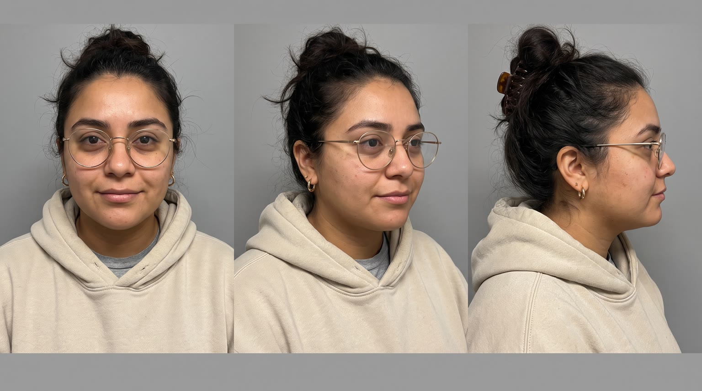
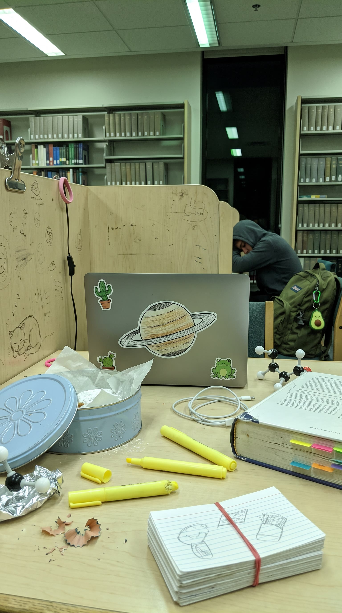
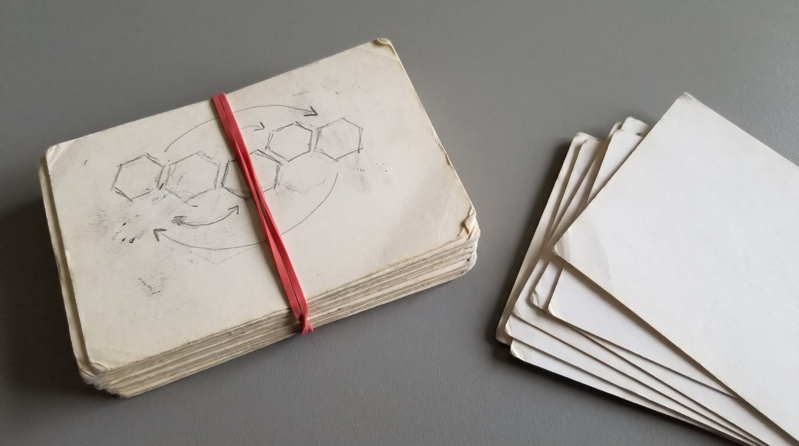
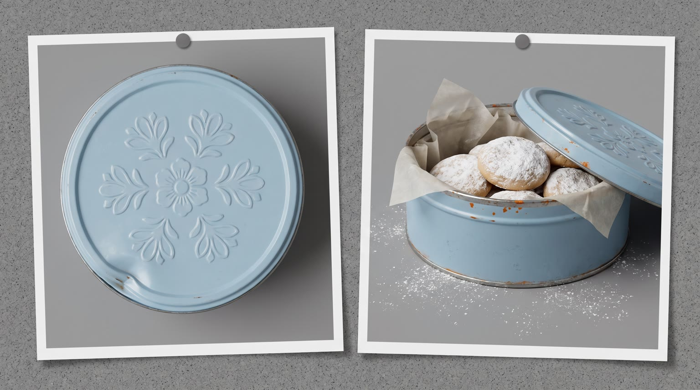
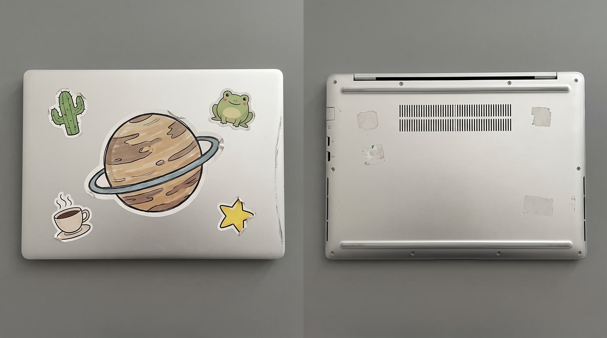

All templates · template.json · original storyboard
UGC creator testimonialugc-01-finals-weekFinals Week
2am in the university library, seven hours before her final. A grad student films herself explaining why she swapped her old study-night habit for {{product.name}}, then proves it by the time the window goes blue.
Fit by product type
| ingested | great | a study-night snack or pick-me-up at the carrel is the most native UGC product moment there is |
| applied | good | lip balm, hand cream or under-eye patches tried on camera at 2am read as honest creator content |
| worn | good | glasses, hoodies, headphones and socks pulled on in the selfie; shoes only show well in the rear-camera insert |
| handheld | great | earbuds, pens, timers and phone gear held to the lens, then used at the desk |
| carried | good | a backpack, pencil case or laptop sleeve unzipped on the carrel to show what is inside |
| home | stretch | only desk-scale home items (lamp, cushion, speaker, organiser) fit a library carrel; the beat never leaves the desk |
| consumable | great | gum, snacks and refill packs pulled from her bag every study night |
Refuses: products for children; alcohol; sleep aids or anything that sedates (the story is staying sharp to study); furniture or anything that cannot sit on a library desk; prescription or regulated drugs
Cast, world and props (shipped with the template)





- Dani Ortiz is a second-year chemistry PhD student at Eastbrook University. Her cumulative organic exam is at 9am in a basement lecture room, and a fail means a retake in May.
- Carrel 31 on the Harlow Hall quiet floor has been hers since first year. She pencilled a tiny sleeping cat on its side wall during her first finals and adds one whisker every term; there are four now.
- Her deck is 212 hand-drawn reaction cards, one mechanism per card, held with a red rubber band. The plan is to get through all of them before the window goes light.
- Her grandmother in San Diego mails a dented tin of homemade snowball cookies every finals week. It arrived Tuesday; it is half empty.
- She posts study-with-me videos to about 4,000 followers from a phone propped on two library books and a hair tie, and one student two carrels down has been asleep since midnight.
Script: what each line must do
Right column is the worked example for Red Bull Sugarfree.
| Time | Speaker | Intent (template) | Example |
|---|---|---|---|
| 0.3-2.3 | dani | Fixed: It's 2am, my exam's at nine, and I'm weirdly fine. Max 12 words. Delivery: half-whisper, quick, a little smug, leaning into the lens | It's 2am, my exam's at nine, and I'm weirdly fine. |
| 2.6-4.4 | dani | Name the old study-night habit this product replaces or beats, in her own casual words, then 'Never again.' the old habit is the plain generic thing this product is the better version of (the old study snacks, cheap earbuds that die, a balm that never lasts); never name or show a rival brand; no claim that the old thing is harmful; no benefit claims here Max 10 words. Delivery: eye-roll, deadpan, faster | Last semester I lived on the sugary stuff. Never again. |
| 4.7-5.8 | dani | Fixed: So I swapped to this. Max 6 words. Delivery: bright, holding it up, like showing a friend | So I swapped to this. |
| 8.2-11.2 | dani | Product line: say {{product.name}} clearly (or its short spoken form), then the ONE benefit from product.benefits that answers the old habit in L2. benefit comes only from product.benefits, reworded no further than person and tense; brand spelled phonetically in the video prompt using product.phonetic Max 12 words. Delivery: right after the product moment, clear and a touch slower on the name, a small nod | Red Bull Sugarfree. Same benefits as the original, just no sugar. |
| 11.7-14.1 | dani | A second, different benefit from product.benefits in her own casual words, tied to getting through the cards tonight; if the page has only one benefit, say how it feels to use at 2am without adding any new claim. benefit comes only from product.benefits, reworded no further than person and tense; no numbers, no medical or performance claims unless the page states them word for word Max 9 words. Delivery: sincere, tapping the textbook, quieter | It keeps me alert, and I'm actually focused. |
| 21.9-24.9 | dani | Fixed: Chapter ten, done. And I actually feel ready. Max 10 words. Delivery: tired, proud, a soft laugh, dawn light on her face | Chapter ten, done. And I actually feel ready. |
| 26.0-29.6 | dani | In-world CTA: open with 'Finals week?', tell the viewer to grab {{product.short_name}}, then product.tagline if the page has one, else a 3 to 5 word line tying the product to getting through the night. must open with 'Finals week?'; tagline verbatim from the page if it exists; brand spelled phonetically in the video prompt using product.phonetic Max 11 words. Delivery: direct to lens, pushing the product toward camera, grin on the tagline | Finals week? Grab the silver can. Wiiings without sugar. |
Product-adjacent props by type
| ingested | the product standing by her elbow on the carrel desk between the highlighters and the cookie tin, cold beads on it |
| applied | the product lying on the rubber-banded index cards beside the highlighters |
| worn | the product folded on the next chair beside her olive backpack |
| handheld | the product on the index cards beside the laptop, its cable trailing to the taped power strip if it charges |
| carried | the product slumped on the next chair, half unzipped, cards and highlighters showing inside |
| home | the product set up on the carrel desk or clipped to the carrel wall beside the bent-neck lamp |
| consumable | a pack of the product half out of the front pocket of her olive backpack |
Shots and how the product appears for each type
S01 · 0 to 2.4 s · absent
Dani leans into the lens at the carrel at 2am, laptop glow on her face, fluorescent tubes and dark shelves behind, and whispers the hook.
S02 · 2.4 to 4.6 s · absent
Jump cut: she rolls her eyes and makes a flat 'never again' hand chop beside her face.
S03 · 4.6 to 6.0 s · reveal
She lifts the product up into frame beside her face, label or logo turned to the lens.
| ingested | holding {{product.visual}} up beside her cheek about 35 cm from the lens, unopened, upright, label flat to camera, cold condensation on it, four fingers wrapped behind it and her thumb in front |
| applied | holding {{product.visual}} up beside her cheek about 35 cm from the lens, capped and unused, label flat to camera, pinched between her thumb and two fingers |
| worn | holding {{product.visual}} up toward the lens beside her face by one edge or strap, not yet on, its front and best detail turned to camera |
| handheld | holding {{product.visual}} up beside her cheek about 35 cm from the lens on her fingertips, logo or face of the device to camera |
| carried | lifting {{product.visual}} by its handle or strap half into frame beside her shoulder, front panel and logo to camera |
| home | tilting the phone so {{product.visual}}, set up on the carrel desk beside her, sits in frame next to her face, pointing at it with a capped highlighter |
| consumable | holding one unopened pack of {{product.visual}} up beside her cheek about 35 cm from the lens, label flat to camera, four fingers behind it and her thumb in front |
S04 · 6.0 to 8.0 s · hero
Flip to the rear camera: on the cluttered desk, her hand opens or starts using the product between the highlighters and index cards.
| ingested | {{product.visual}} standing upright in the centre of the desk, label facing camera, condensation beads on it, a woman's hand with short unpainted nails opening it with a tiny spray |
| applied | a woman's hand with short unpainted nails uncapping {{product.visual}} in the centre of the desk, label facing camera, and squeezing or dabbing a little onto the back of her other hand |
| worn | {{product.visual}} laid out in the centre of the desk on the index cards, a woman's hand with short unpainted nails unfolding it or lifting it by one edge to show its best detail |
| handheld | a woman's hand with short unpainted nails switching on, clicking or snapping on {{product.visual}} in the centre of the desk, logo to camera, a small light or movement showing it working if it has one |
| carried | {{product.visual}} lying across the desk, logo to camera, a woman's hand with short unpainted nails unzipping or opening it to show the inside, highlighters and cards sliding in |
| home | {{product.visual}} set up on the corner of the desk, a woman's hand with short unpainted nails switching it on or adjusting it, its light or shape changing the corner of the carrel |
| consumable | a woman's hand with short unpainted nails tearing open one pack of {{product.visual}} in the centre of the desk, the pack label to camera |
S05 · 8.0 to 11.4 s · in_use
Back on the front camera: she uses the product for a beat, then names it, label to the lens at chin height.
| ingested | having just lowered {{product.visual}} from a sip, holding it opened and steady at chin height about 35 cm from the lens, upright, label flat to camera |
| applied | having just applied {{product.visual}} (a fresh sheen where it went on), holding it steady at chin height about 35 cm from the lens, label flat to camera |
| worn | now wearing {{product.visual}}, one hand touching it once to show it off, the product clearly in frame |
| handheld | having just used {{product.visual}}, holding it steady at chin height about 35 cm from the lens, logo to camera |
| carried | with {{product.visual}} slung on one shoulder, holding its strap up at chin height so the logo faces the lens |
| home | leaning back so {{product.visual}}, now on or in use on the desk beside her, sits in frame next to her face |
| consumable | having just used one of the product ({{product.visual}}), holding the open pack steady at chin height about 35 cm from the lens, label flat to camera |
S06 · 11.4 to 14.4 s · background
She taps the open textbook with a highlighter, the product in the corner of frame, sincere.
| ingested | {{product.visual}} stands upright on the desk in the lower right corner, opened, label toward the lens |
| applied | {{product.visual}} stands capped on the desk in the lower right corner, label toward the lens |
| worn | She is wearing {{product.visual}}, clearly in frame; if it is worn below the frame (shoes, socks), it sits on the desk in the lower right corner instead |
| handheld | {{product.visual}} rests on the desk in the lower right corner, logo toward the lens |
| carried | {{product.visual}} sits open on the desk in the lower right corner with cards and highlighters inside |
| home | {{product.visual}} is set up and on at the desk in the lower right corner |
| consumable | the open pack of {{product.visual}} lies on the desk in the lower right corner, label toward the lens |
S07 · 14.4 to 18.0 s · background
Propped phone time-lapse: she works through the index cards, flipping and stacking, the product beside her.
| ingested | {{product.visual}} standing upright beside her elbow |
| applied | {{product.visual}} standing capped beside her elbow |
| worn | she is wearing {{product.visual}} |
| handheld | {{product.visual}} beside her elbow, in use or within reach |
| carried | {{product.visual}} open on the chair beside her |
| home | {{product.visual}} set up on the carrel and on |
| consumable | the pack of {{product.visual}} beside her elbow |
S08 · 18.0 to 21.5 s · background
Same angle, hours later: the window behind her has gone blue with dawn, the card stack is tall, she stretches her arms up; the product is where it was.
| ingested | {{product.visual}} standing upright in the same spot by her elbow, now empty |
| applied | {{product.visual}} standing in the same spot by her elbow, cap off |
| worn | she is still wearing {{product.visual}} |
| handheld | {{product.visual}} in the same spot by her elbow |
| carried | {{product.visual}} on the chair beside her, now zipped and packed |
| home | {{product.visual}} still on in the same spot on the carrel |
| consumable | the pack of {{product.visual}} in the same spot by her elbow, lighter now |
S09 · 21.5 to 25.5 s · absent
Dawn selfie: blue window light on her face, she fans the stack of finished index cards next to her cheek and laughs softly.
S10 · 25.5 to 30 s · hero
She holds the product out toward the lens beside her grin and delivers the CTA and tagline. End card sticker added in post.
| ingested | holding {{product.visual}} out toward the camera beside her face, about 35 cm from the lens, upright, label flat to camera, four fingers behind it and her thumb in front |
| applied | holding {{product.visual}} out toward the camera beside her face, about 35 cm from the lens, capped, label flat to camera |
| worn | wearing {{product.visual}}, or holding it up toward the lens beside her face if it is worn out of frame, pointing at it with her free hand |
| handheld | holding {{product.visual}} out toward the camera beside her face, about 35 cm from the lens, logo to camera |
| carried | holding {{product.visual}} up by its strap beside her face toward the lens, logo to camera |
| home | tilting the phone so {{product.visual}}, still on at the desk in the dawn light, sits in frame beside her grin, one hand presenting it |
| consumable | holding the pack of {{product.visual}} out toward the camera beside her face, about 35 cm from the lens, label flat to camera |
Generation units (templated prompts)
U1 · 6 s
9:16 unedited smartphone front-camera selfie video, filmed by @Image1 (Dani) herself at arm's length at a university library study carrel at 2am, greenish fluorescent light and laptop glow on her face, plain shelves behind as in @Image2, phone sensor noise, small handheld wobble, not cinematic. Shot 1 (0 to 2.4 s): close-up, she leans into the lens and half-whispers, a little smug: "It's 2am, my exam's at nine, and I'm weirdly fine." Hard jump cut. Shot 2 (2.4 to 4.6 s): slightly wider, she rolls her eyes and does a flat chopping hand gesture, deadpan: "{{line.L2}}" Hard jump cut. Shot 3 (4.6 to 6 s): {{action.S03}}, the product exactly as @Image3 and not mirrored, bright: "So I swapped to this." The phone is never visible. Native sound: library room tone, fluorescent hum, her voice slightly roomy on a phone mic. No music. No text on screen. No logos except the product's own.U2 · 6 s · exact-risk
9:16 unedited smartphone video in a library at 2am, phone noise, not cinematic. Shot 1 (0 to 2 s): handheld rear-camera view looking down at 45 degrees onto a cluttered study desk, {{action.S04}}; the product's own opening or use sound is crisp and close. Hard cut. Shot 2 (2 to 5.4 s): front-camera selfie close-up of @Image2 (Dani), {{action.S05}}, and says clearly, a touch slower on the name: "{{line.L4}}" (say the brand as {{product.phonetic}}). Small nod. Keep the product's shape, colours and label exactly as @Image1, unmirrored. One product only. Native sound: the product's own sound, room tone, her voice. No music.U3 · 14 s
9:16 unedited smartphone video at a university library study carrel, phone noise, flat light, not cinematic. Shot 1 (0 to 3 s): front-camera selfie medium shot of @Image1 (Dani), she taps an open textbook with a highlighter, {{action.S06}}, the product exactly as @Image3, sincere: "{{line.L5}}" Hard cut. Shot 2 (3 to 6.6 s): the phone is now propped on the carrel shelf, locked off, sped-up time-lapse: she writes and stacks index cards quickly, {{action.S07}}, the product staying in the same place, the window behind her is black. Shot 3 (6.6 to 10 s): same locked angle, the time-lapse slows to real time as the window goes pale blue with dawn; she leans back and stretches both arms up; the card stack is tall; {{action.S08}}. Hard cut. Shot 4 (10 to 14 s): front-camera selfie close-up in blue dawn light, she fans the stack of cards beside her cheek, tired and proud, soft laugh: "Chapter ten, done. And I actually feel ready." Cards have no readable writing. Location as @Image2. Native sound: highlighter tap, fast page flips, birds outside at dawn, her voice. No music.U4 · 5 s · exact-risk
9:16 unedited smartphone front-camera selfie at a library carrel at dawn, pale blue window light, phone noise, not cinematic. @Image2 (Dani) grins into the lens, {{action.S10}}, holds it still and says directly, with a grin on the last words: "{{line.L7}}" (say any brand name as {{product.phonetic}}). The product does not bend, warp or change; keep its shape, colours and label exactly as @Image1, unmirrored. Keep the lower third clean. Native sound: room tone, birds, her voice. No music, no text.